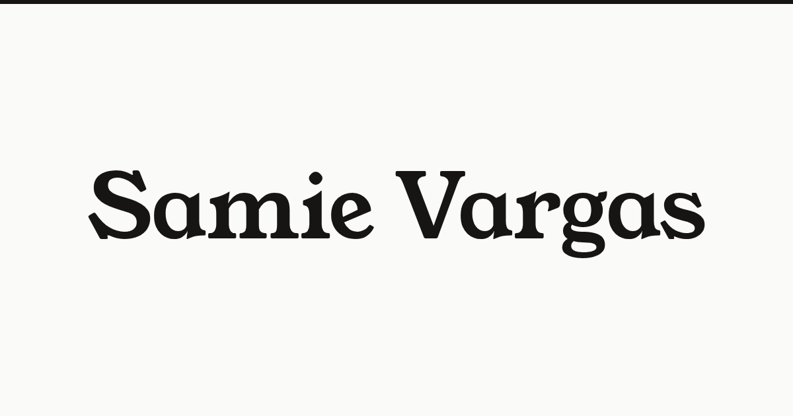

How this site is put together.
I always wanted my own website, and I wanted to teach myself to code past HTML, and this page is the part I would normally keep in a scratch file: the tokens, the components, the marks, the copy decisions, and every change I have made with the reason attached.
It is public because I found evebouffard.com and loved being able to see the thinking that went into a site alongside the site, so here is mine.
In plain terms: this is the behind-the-scenes page, the colors and fonts and building blocks the site is made of, and a log of what changed and why.
01What I changed, and why
snapshotted from the repo on every pushThe list on the left is written by the repo itself: on every push, a small Action snapshots the commits behind samievargas.com, from the SamieVargas/samievargas.github.io repo, into the site, so it updates when I push and never has to ask GitHub from your browser. The notes on the right are the ones worth a sentence of explanation, because a commit message never says why, so any commit with a "Why:" line in its body shows up there on its own.
When each page last changed
Commits
The reasons
The fine-tuning build is the one open item, and it is on the work page with its bars drawn as placeholders until the scores publish.
02The pieces I reuse
three typefaces, one greenYoung Serif for anything that speaks, Onest for the reading, and Geist Mono for anything that labels or measures, with paper and ink for the frame and one green for the thing you should look at.
In plain terms: one sentence under every project for the reader who skipped the technical part.
--accent: oklch(0.47 0.08 168);
03The mark, and what a link looks like
Most people meet this site as a favicon in a crowded tab strip or a card in someone's Slack. Both were the least considered parts of it, so I redrew them in the same type as everything else.
Favicon
favicon.svg · favicon-32.png · favicon-16.png · apple-touch-icon 180 · icon-192 · icon-512, both maskable
Across the site
every page, the arcade and its fifteen apps, the replays and the 404 share the same set, and /raccoon keeps its own italic S because it keeps its own look
Social card · 1200×630

The card used to be 347×190, so every platform blew it up into a blur, and now it is drawn at full size in the same serif as everything else with just my name on it, which matches the tab and the title that sits under it in a link preview.
04The lines that do the work
read live from the home page · length against each surface's limit05How it is built
Plain HTML, CSS custom properties, and vanilla JavaScript modules, deployed on GitHub Pages, with no framework and no build step, which was the point, because I wanted to understand every part of it rather than inherit someone else's structure.
The two live LLM apps, Signal and Brain Dump, talk to the Anthropic API through a Cloudflare Worker, so the key stays on the server and the front end can stay public, and it is the same pattern both times, while Life in Pixels and Guideline Assist are replayed on the site from their recorded eval runs, and Field discovery is shown as a walkthrough of its golden transcript.
I built it with Claude Opus, and I am saying so here because the alternative is pretending I did not, and what I brought was the judgement about what to cut, what to prove, and which numbers I am willing to defend.
HTML · CSS custom properties · vanilla JS modules
Anthropic API behind a Cloudflare Worker
dbt on BigQuery · Python · folium
GitHub Pages · custom domain · GA4
Claude Opus, and my own judgement about what to cut